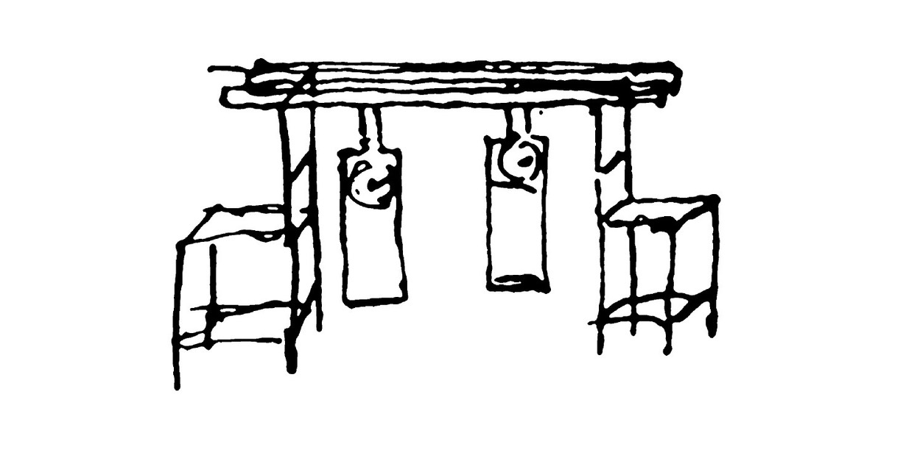

Physical-biological interactions
. . .when we suspended two clocks constructed from two hooks imbedded in the same wooden beam, the motions of each pendulum in opposite swings were so much in agreement that they never receded the least bit from each other and the sound of each was always heard simultaneously. The cause is that the oscillations of the pendula, in proportion to their weight, communicate some motion to the clocks (Huygens 1967).
We like physics and we like biology, so we enjoy looking at how the physical properties of the ocean (as for example turbulence and mixing at different temporal and spatial scales) influence the activity of microscopic unicellular algae. Despite their small size and their simplicity, phytoplankton produce as much oxygen as all the rain forest and land plants put together, absorb carbon dioxide and slow down climate change. For that we run experiments in the lab, we go to the field to study natural populations, and we also look at them from the space by using satellite images. Finally, we use the power of numbers and put the different pieces together by using numerical modelling. If you are a student looking for an undergraduate, master or PhD project on this topic click here.